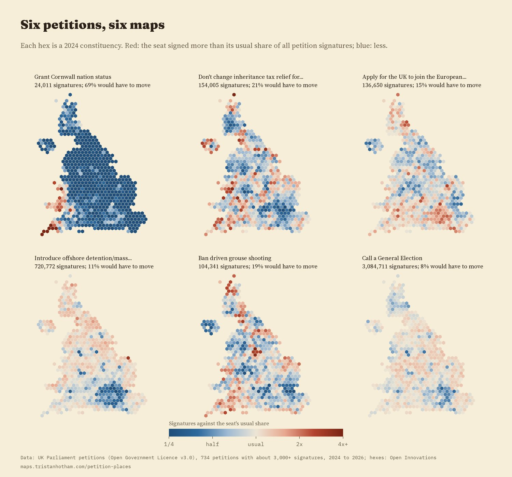
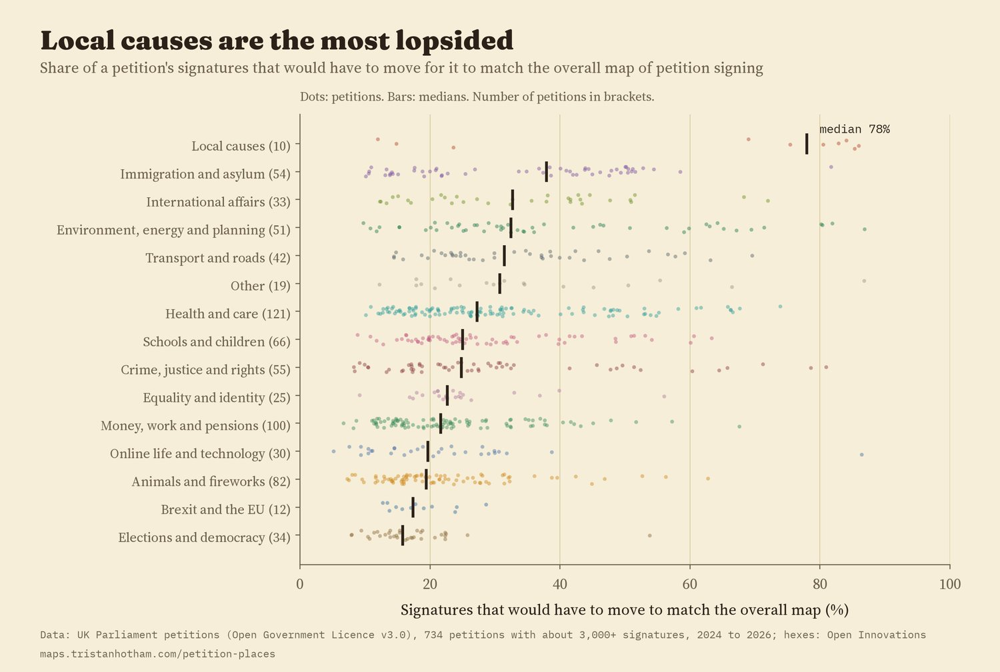
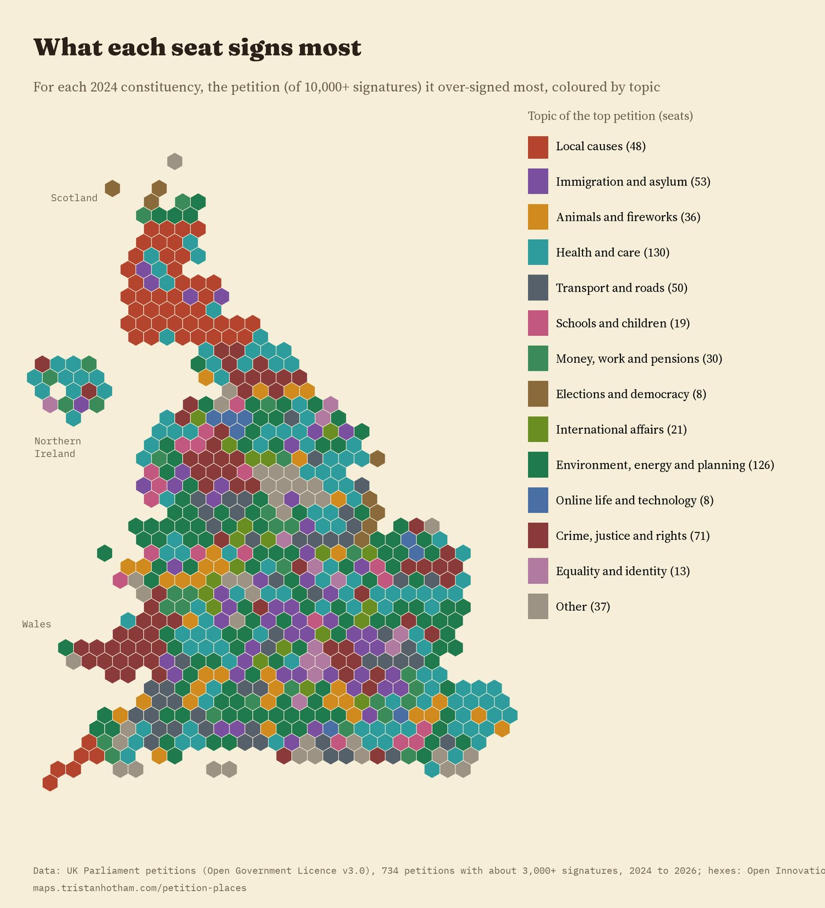
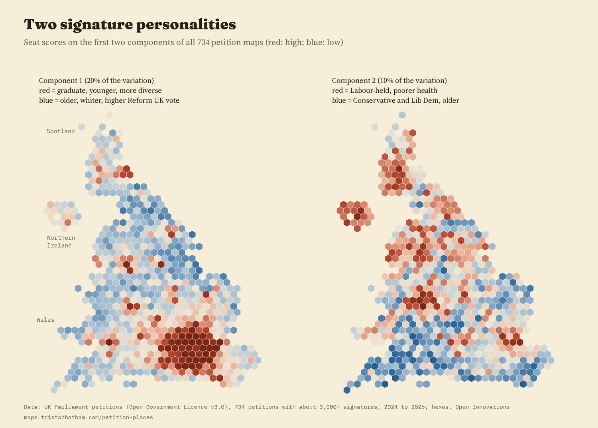
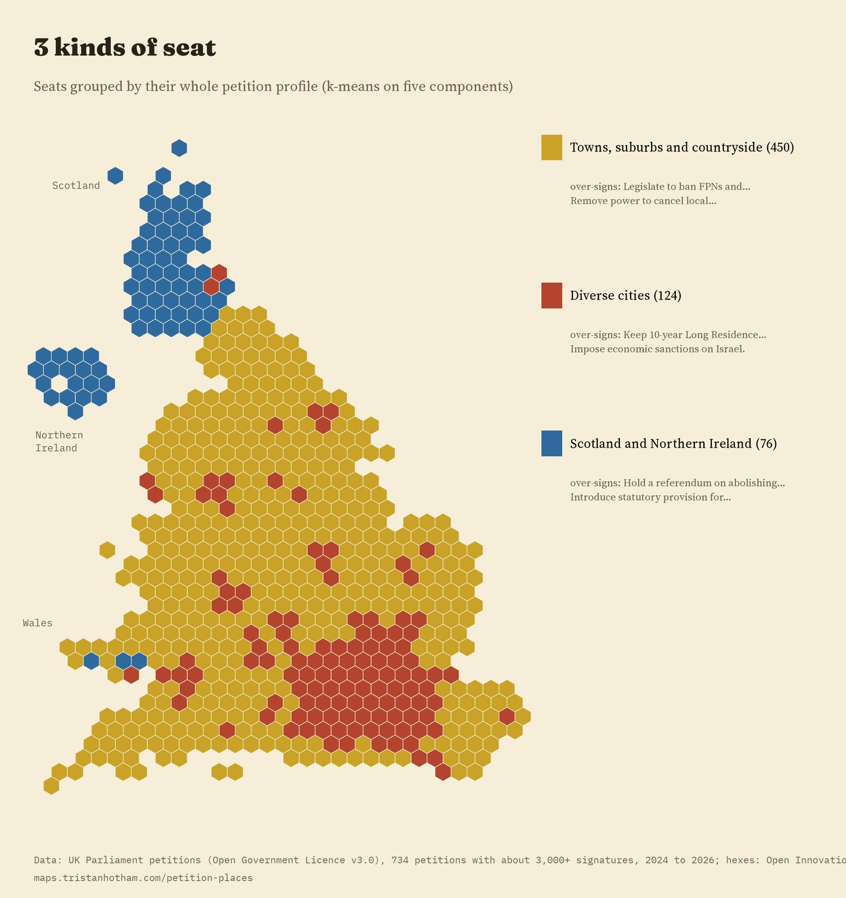
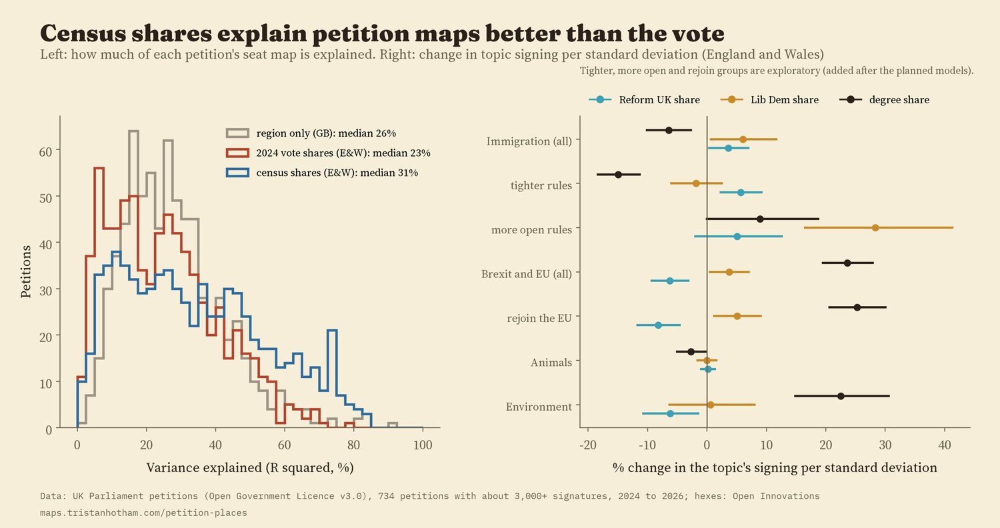
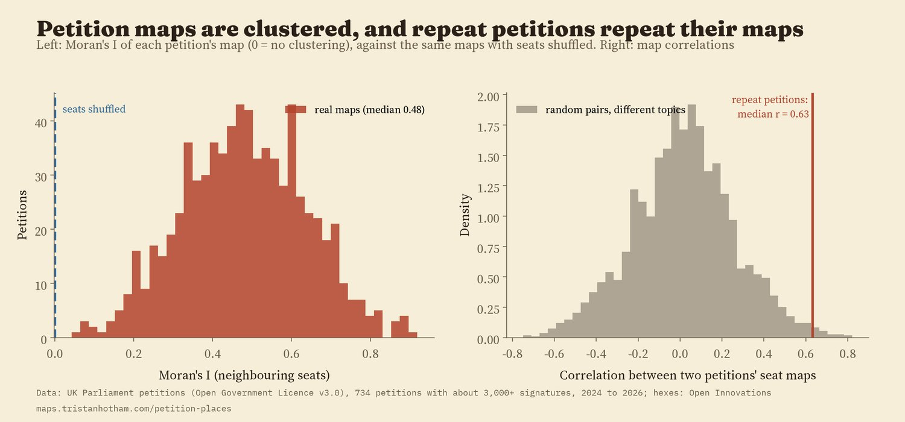
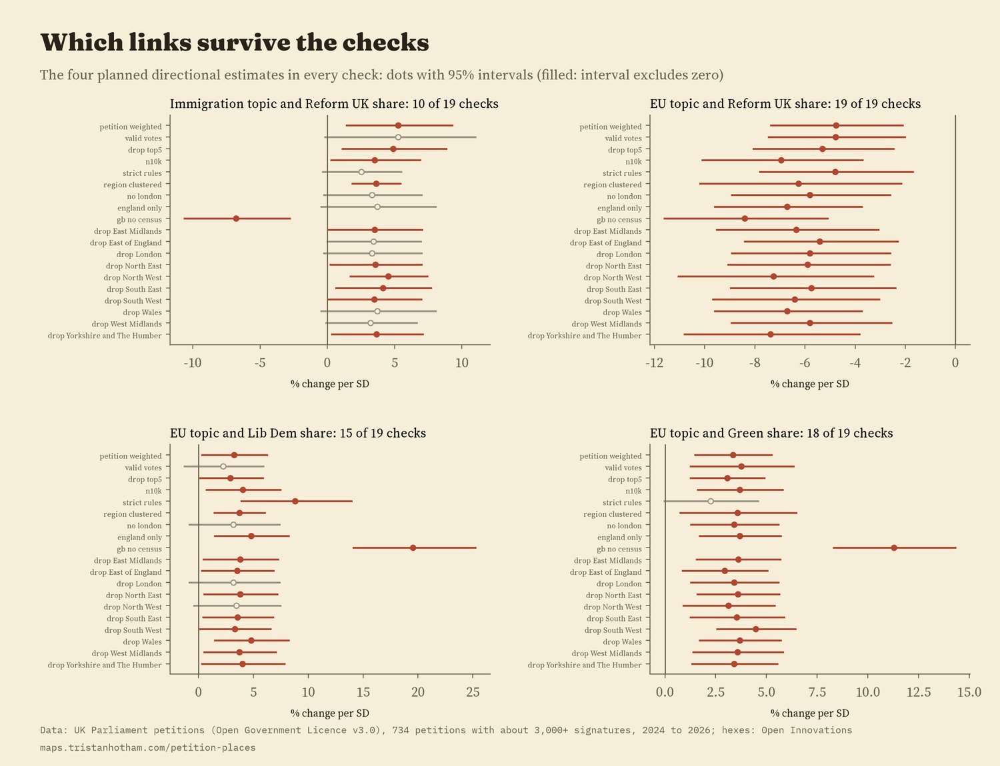

734 UK Parliament petitions with about 3,000 or more signatures, 2024 to 2026, counted in all 650 constituencies. Each hex is a seat. Colour shows the petition each seat over-signed most, or pick any petition to see its map. Tap a seat.
Any UK resident or British citizen can start or sign a petition to Parliament. When you sign, the site asks for your postcode, and it publishes a running count of signatures in every constituency. That makes each petition a little map of who cared. I took the 734 petitions of the current Parliament that had reached about 3,000 signatures by the time I collected the data, 30,882,864 signatures between them, and asked a simple question: what does each constituency sign more than the rest of the country does?
To compare petitions of very different sizes, I measure each seat against itself. A seat that gives a petition the same share of its signatures as the country as a whole scores one. Twice the usual share scores two. Some seats sign far more petitions than others overall, from 9,446 signatures in Na h-Eileanan an Iar to 65,942 in Rayleigh and Wickford, so this keeps the busiest seats from dominating every map. Small counts are pulled gently towards one, so a seat with a handful of signatures cannot top a list by chance.
The biggest petition, "Call a General Election", with 3,084,711 signatures, is close to the national pattern everywhere: only 8% of its signatures would have to move for it to match the overall map exactly. At the other end, "Grant Cornwall nation status" drew 67 times the usual share in Truro and Falmouth and 64 times in St Ives, and 69% of its signatures would have to move. Between the two sit petitions with clear but broad geographies: "Don't change inheritance tax relief for working farms" is strongest in South Shropshire and North Herefordshire; "Ban driven grouse shooting" in Sheffield Hallam and Derbyshire Dales, both on the edge of the Peak District.

Six petitions on the same scale. Red: more than the seat's usual share; blue: less.
Every one of the 734 maps is clustered: neighbouring seats sign alike far more than chance would give. The typical petition has a spatial correlation (Moran's I) of 0.48; shuffle the seats at random and it falls to -0.00.
Ten petitions are about a particular part of the UK, among them Cornwall's status, two about the rail link between Oxford and Cambridge, the Scottish Parliament, Northern Ireland veterans, the London Mayor. Their maps are far more lopsided than any other topic's. In the typical local petition 78% of signatures would have to move to match the national pattern, against 24% for all other petitions, and 45% of its signatures come from just ten seats. Allowing for petition size, local causes are 189% more uneven than national ones (95% interval 71% to 389%). "The Government must get the East West Rail Line passenger service running ASAP" was signed 298 times as heavily as usual in Buckingham and Bletchley.
Among national topics, immigration petitions have the most uneven maps (a typical 38% would have to move) and petitions about elections and democracy the least (16%). Immigration petitions are uneven partly because they pull in opposite directions: in an exploratory split (section 04), petitions asking to keep or open routes to settlement were signed most in more diverse seats, and petitions asking for tighter rules most in whiter seats with a higher Reform UK vote.

Each dot is a petition. Bars are medians.

The map's opening layer: the topic of each seat's most over-signed petition. 144 different petitions top at least one seat.
Put all 734 maps together and ask what they share. The first summary dimension (a principal component) holds 20% of the variation between seats, the second 10%. The first separates seats with more graduates, younger people and more ethnic diversity (correlation with the share holding a degree 0.79) from older and whiter seats with a higher Reform UK vote in 2024 (-0.67). The second separates seats held by Labour with poorer health from Conservative and Liberal Democrat seats with older populations. Neither is a party line: they are bundles of topics that tend to travel together.

Seat scores on the two main personalities.
These personalities are stable. Split the petitions into the 367 created first and the 367 created later, and the seats line up almost identically: correlation 0.96 for the first personality and 0.96 for the second. Grouping seats by their whole profile gives 3 groups: 450 seats of towns, suburbs and countryside, 124 seats in diverse cities (68 in London), and 76 seats, almost all in Scotland and Northern Ireland, which probably partly reflects the many petitions about English schools and services that have little to do with them.

Three groups of seats by petition profile.
For each petition I asked how much of its seat map the 2024 general election vote shares can account for. The typical answer is 26% in Great Britain, about as much as knowing the region alone (26%). In England and Wales, four census shares (age, degrees, health and ethnicity) account for more (31%) than the vote (23%). The biggest petition, "Call a General Election", follows it closely: the vote accounts for 78% of its map, which correlates 0.69 with the Conservative share. Others hardly follow it at all, such as "Fund NHS access to Omaveloxolone for patients with Friedreich's Ataxia" (7%).
Two planned tests looked at direction. Petitions about Brexit and the EU were signed less where Reform UK did well (-6.3% per standard deviation of the Reform UK share, 95% interval -9.3% to -3.1%), even after age, degrees, health, ethnicity and region, and that held in all 19 checks. They were signed more where the Greens did well (3.6%, held in 18 of 19 checks) and the Liberal Democrats did well (3.7%, held in 15). Immigration petitions as a whole were signed slightly more where Reform UK did well (3.6%, 0.4% to 7.0%), but that held in only 10 of 19 checks, so I do not treat it as solid. Splitting immigration petitions by what they ask for, which I did only after seeing that result, suggests why: those asking for tighter rules track the Reform UK vote (map correlation 0.64), while those asking to keep or open routes run the other way (-0.39).

How much the vote and the census explain, and the planned directional tests.
Repeat petitions on the same subject, such as the 21 groups of near-identical petitions on a general election, the personal allowance or rejoining the EU, should have similar maps if the maps are real and not noise. They do: the typical correlation between two repeat petitions' maps is 0.63, against 0.01 for random pairs on different topics. The clustering result holds with other neighbour definitions, other denominators and raw counts. The most over-signed petition in each seat is the same with or without the gentle pull towards one in 98% of seats.

Clustering against shuffled seats, and repeat petitions against random pairs.

Every planned check for the four directional estimates.
Petitions. The petitions site publishes every petition of the current Parliament (17,201 by the time I collected them, 9,057 of them rejected) and, for each, signatures by constituency. I used the 734 that had about 3,000 or more signatures, which hold 93% of all signatures. I sorted them into topics with keyword rules and then read every one, moving 123 by hand.
Measures. Each seat's share of a petition's signatures is compared with its share of all petition signatures. The 2023 boundary review gave nearly every seat an electorate within 5% of the same size, so raw counts are close to rates. I wrote the analysis plan down before computing any of these measures, and anything added later is labelled as exploratory.
What this cannot say. A seat is not a person: a petition signed heavily in a seat with a high Reform UK vote does not mean Reform UK voters signed it. Signing is a minority activity, people may give a postcode that is not where they live, and campaigns can push a petition hard in one place. Petitions still open were still collecting signatures. Northern Ireland and Scotland have no census shares in the data I used, and the vote tests leave out Northern Ireland, where different parties stand.